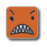

|  | Stage:1 | Number of rolls:0 |
This project allows a user to play Angry Dice in the web browser.
The browser enforces the rules of the game, progressing through the three stages for the user, and moving them back to Stage 1 when they roll double Angry faces.
The full rules of the game are below:
## The Battle
Players roll their dice at the **same time**, trying to get from 1 to 6 the fastest. The first to do so wins!
## The Details
Each player needs two Angry Dice. Players roll their dice, looking to complete Stage 1, then Stage 2, then Stage 3. When each Stage is complete, the player must declare it out loud.
### Stage 1
One die showing 1 pip, another showing 2 pips.
### Stage 2
One die showing the Angry face (which represents a 3), another showing 4 pips.
### Stage 3
One die showing 5 pips, another showing 6 pips.
Players do not have to perfectly roll each Stage; if a die shows one face in a set, that die is locked (left aside) and the player now rolls the other die to complete the set. EXCEPTION: The 6 die face may never be locked!
## The Anger
If the dice ever show both Angry Faces, the player must START OVER from **Stage 1**.
## The Victory
The first player to race through all Stages to reach Stage 3 and announces "GET ANGRY!" is declared the victor!